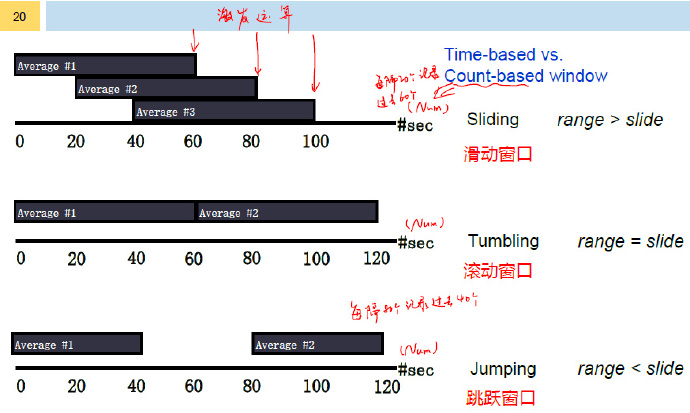
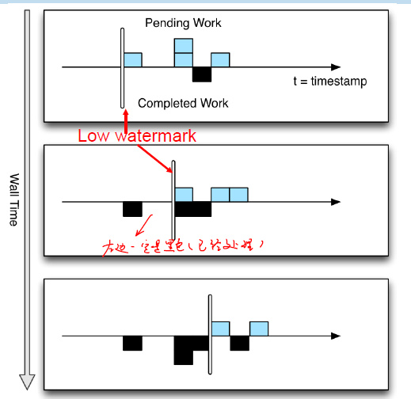
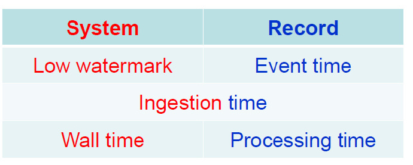

流计算应用需求
静态数据
- 很多企业为了支持决策分析而构建的数据仓库系统，其中存放的大量历史数据就是静态数据。技术人员可以利用数据挖掘和OLAP（On-Line Analytical Processing）分析工具从静态数据中找到对企业有价值的信息。
- OLTP：主要面向事务处理（数据库）
- OLAP：数据仓库
- 基于HDFS的数据仓库：Hive
流数据
- 近年来，在Web应用、网络监控、传感监测等领域，兴起了一种新的数据密集型应用——流数据，即数据以大量、快速、时变的流形式持续到达
- 实例：PM2.5检测、电子商务网站用户点击流、监控路网视频
数据特征
- 数据快速持续到达，潜在大小也许是无穷无尽的
- 数据来源众多，格式复杂
- 数据量大，但是不十分关注存储，一旦经过处理，要么被丢弃，要么被归档存储
- 注重数据的整体价值，不过分关注个别数据
- 数据顺序颠倒，或者不完整，系统无法控制将要处理的新到达的数据元素的顺序
流计算特征
- 无界（Unbounded）
- 数据记录(record)在计算过程中不断地动态到达
- 与批处理不同，计算过程开始之前就知道数据大小与边界，更容易优化
- 乱序（Out-of-order）
- record的原始顺序和在处理节点上的处理顺序可能不一致
- shuffle过程（数据传递）也可能导致顺序改变
- 延迟（Delay）
- record的产生时间和在处理节点上的处理时间可能差别很大
流计算基本概念
状态
Data Stream Basics
- Input data is structured (has a schema) and there is no clear beginning or end
- Each record holds its origin-creation timestamp
- Application Logic is encapsulated within Processing Elements (PEs)
- Records travel across different PEs and invoke application logic
Processing Model
- Data Stream
- sequence of records.
- Processing Element (PE)
- basic computational element (think of a tiny program / one function)
- PEs consume and produce data streams.
- Events are consumed only once in sequence -no back tracking!
Summary States
- Synopsis(梗概)
- A summary of an infinite stream
- 是一种数据结构，记录一定时间内的数据状态
窗口
Stream Windows
- We often need to apply grouped aggregationon relevant sets of records (e.g. a user session).
- A stream window is a relevant slice(切片)in the space-time continuum(连续统一体)
- Range
- Most data stream processing systems allow window operations on the most recent history(eg.,1 minute, 1000 tuples)
- Trigger/Slide
- The frequency/granularity f is evaluated on a given range
Stream Window types

时间
Time Semantics
- 如何定义时间？
- Processing Time
- Local time in each PE
- Event-Time
- Origin-Time (remember? events carry time)
- 我们更需要Event-Time，但会有不少问题产生
How do we measure Event-Time?
- No total ordering by event timestamp
- 如何根据event-time进行window操作？
- Low Watermarks
- Low watermark indicates that all data up to a given timestamp has been received.
- Low Watermarks indicate every PE of the “Reality” time ~ lowest origin time in the system.
- 系统可以确认该时间之前的数据全部已经收到并完成处理
- 
More on Time

Low Watermark局限性
- 在一定程度上保证数据的完整性、时效性
- 无法完全避免数据比low watermark晚到达
- 比如数据在没有进入到流式计算系统之前就延误了，low watermark根本不得而知
- 不同的系统处理方式不一样
- 超时机制，如目前为1:30，超时3h，则10:30之前的数据没到达，就不管了